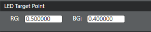
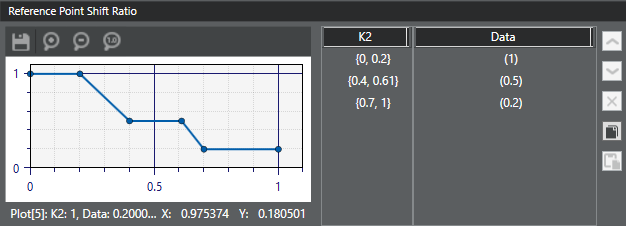

Use this procedure to record the pre-flash reference points and define
the amount of shift in the original AWB reference points towards the LED target
point.
Find pre-flash reference points as described in
Retrieve MWB target points for pre-flash.
-
In the left pane, click the AWB tab, then click LED flash
in the list.
-
In the LED Flash window, click Flash Reference
Points in the Tuning Module panel.
-
For single LED (without calibration factor), set up the LED Target Point by entering the PRE-FLASH
reference points in the RG: and
BG: fields..

-
In the K2 column,
double-click the {0, 0} entry to open the edit dialog. Update the PRE-FLASH K2
start and end values and click outside the box to save the change.

Use the information gathered from the AWB log to determine how
to fine-tune the K2 triggers. Refer to Retrieve K2 values
for pre-flash and main flash.
-
In the Data column,
double-click the (0) entry to open the edit dialog. Update the reference point
shift ratio value for this trigger zone and click outside the box to save the
change.
-
To add more triggers, use the Add above
or Add below buttons to add a new blank
trigger row. Repeat the previous two steps to set the trigger range and
associated shift ratio.
-
To adjust a trigger range or shift ratio, double-click the
appropriate entry to open the edit dialog. Update the value and click outside
the box to save the change.
-
Click .